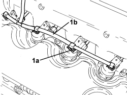
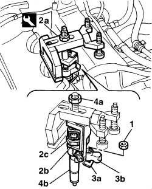

1060F10 FUEL INJECTORS - R.R.
- Path
- Procedures > 10 ENGINE > 1060 DIESEL INJECTION SYSTEM > 1060F INJECTORS AND PIPES > 1060F10 FUEL INJECTORS - R.R.
- Kind
- repair procedure (removal / refitting; the operation number is the code)
- Applies to
- engines: 1.9 JTD 8v, 1.9 JTD 16v, 2.4 JTD 20v; all production periods
- Interactive page
- https://sloeber94.github.io/elrnDB-fCrm/en/#/194002171
Applies to: engines: 1.9 JTD 8v; all production periods
 Removing
Removing
 Refitting
RefittingOp. 1016A10 SOUND-PROOFING COVER - R.R
Op. 5530B52 BATTERY SUPPORT/DRIP TRAY - R.R
Op. 1048B27 RIGID PIPE FOR AIR INLET TO THROTTLE BODY - R R
Op. 1060G50 THROTTLE BODY - R.R
Op. 1080C24 E.G.R. SYSTEM SOLENOID - R + R
Op. 1060F36 PIPES (ALL) FROM FUEL MANIFOLD TO INJECTOR - R.R.
1. Manually push the clips (1a) and disconnect the pipe from the injectors to the fuel manifold (1b), injector side.

Applies to: engines: 1.9 JTD 8v; all production periods
1. Undo the nuts fixing the injector mounting brackets.
2. Position the tool (2a) for extracting the injectors, taking care to position the lifting bracket (2b) under the polygonal area (2c) of the injector.
Tool | Description | Function | Validity |
|---|---|---|---|
1870739000 | Extractor | Removing injectors | 1.9 JTD 8V 1.9 JTD 16V |
3. Position the second tool lifting bracket (3a) under the injector securing bracket (3b).
4. Tighten the tool nut (4a) and remove the injector assembly (4b).
- Repeat the operation for the remaining injectors.

Applies to: engines: 1.9 JTD 8v; all production periods
Refitting
Removing- Place the injectors (1a) in their seats complete with brackets and fasten them tightening the nuts to the recommended torque.
Component | Fastening | dia | Value (daNm) | Validity |
|---|---|---|---|---|
Injector brackets | Nut | M8 | (cylinder head side) 2.7 - 3.3 | 1.9 JTD 8v |
- Connect the pipe from the injectors to the fuel recovery manifold to the injectors and push home until the clips click into place.
Op. 1060F36 PIPES (ALL) FROM FUEL MANIFOLD TO INJECTOR - R.R.
Op. 1080C24 E.G.R. SYSTEM SOLENOID - R + R
Op. 1060G50 THROTTLE BODY - R.R
Op. 1048B27 RIGID PIPE FOR AIR INLET TO THROTTLE BODY - R R
Applies to: engines: 1.9 JTD 16v, 2.4 JTD 20v; all production periods
Removing
Refitting- Position the vehicle on a lift.
Op. 1016A10 SOUND-PROOFING COVER - R.R
- Disconnect the electrical connections from the injectors.
Description | Connector | |
|---|---|---|
- | Injector |
Op. 1060F36 PIPES (ALL) FROM FUEL MANIFOLD TO INJECTOR - R.R.
1. Undo the injector bracket retaining nuts.
2. Remove the injectors (2a) complete with brackets using the tool (2b).
Tool | Description | Function | Validity |
|---|---|---|---|
1870897300 | Extractor | Removing injectors | 1.9 JTD 8V 1.9 JTD 16V 2.4 JTD 20V |

Applies to: engines: 1.9 JTD 16v, 2.4 JTD 20v; all production periods
Refitting
Removing- Refit the injectors complete with brackets and tighten nuts to the specified torque.
Component | Fastening | dia | Value (daNm) | Validity |
|---|---|---|---|---|
Injector brackets | Nut | M8 | (cylinder head extension side) 2.3 - 2.8 | 1.9 JTD 16v 2.4 JTD 20v |
Op. 1060F36 PIPES (ALL) FROM FUEL MANIFOLD TO INJECTOR - R.R.
- Connect the electrical connections to the injectors.
Op. 1016A10 SOUND-PROOFING COVER - R.R
- Remove the vehicle from the lift.
Topics linked from this page (8)
- 1016A10 SOUND-PROOFING COVER - R.R
- 1048B27 RIGID PIPE FOR AIR INLET TO THROTTLE BODY - R R
- 1060F36 PIPES (ALL) FROM FUEL MANIFOLD TO INJECTOR - R.R.
- 1060G50 THROTTLE BODY - R.R
- 1080C24 E.G.R. SYSTEM SOLENOID - R + R
- 5530B10 BATTERY - R+R
- 5530B52 BATTERY SUPPORT/DRIP TRAY - R.R
- N070 INJECTOR